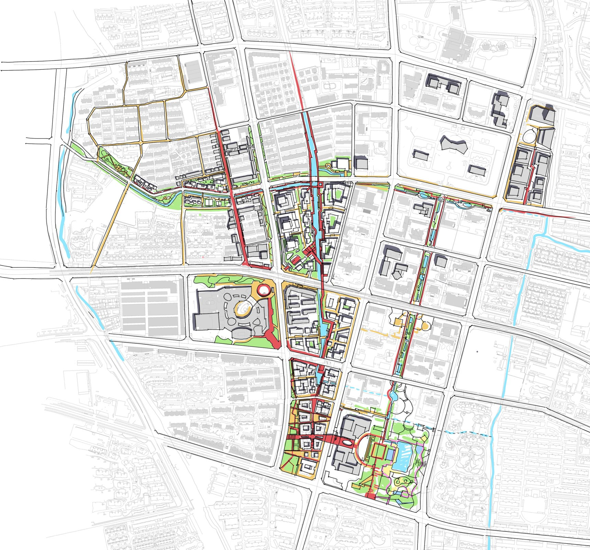

DONGTING, WUXI / 2024 / COLLABORATIVE STUDY
Beyond the Station
Connecting workplaces, neighborhoods, and the river around Baizhuang station.

Reading the barriers
Walled compounds interrupt routes between the metro station, workplaces, and the river. The study treats these enclosed edges and fragmented pedestrian networks as the starting point for renewal.
A connected public realm
The proposal activates vacant land, opens edges, and recovers riverside connections. Streets, waterways, and station-adjacent sites are linked to support a more accessible public realm.
PORTFOLIO
Project 05 / Pages 21–22. Academic and professional work portfolio.